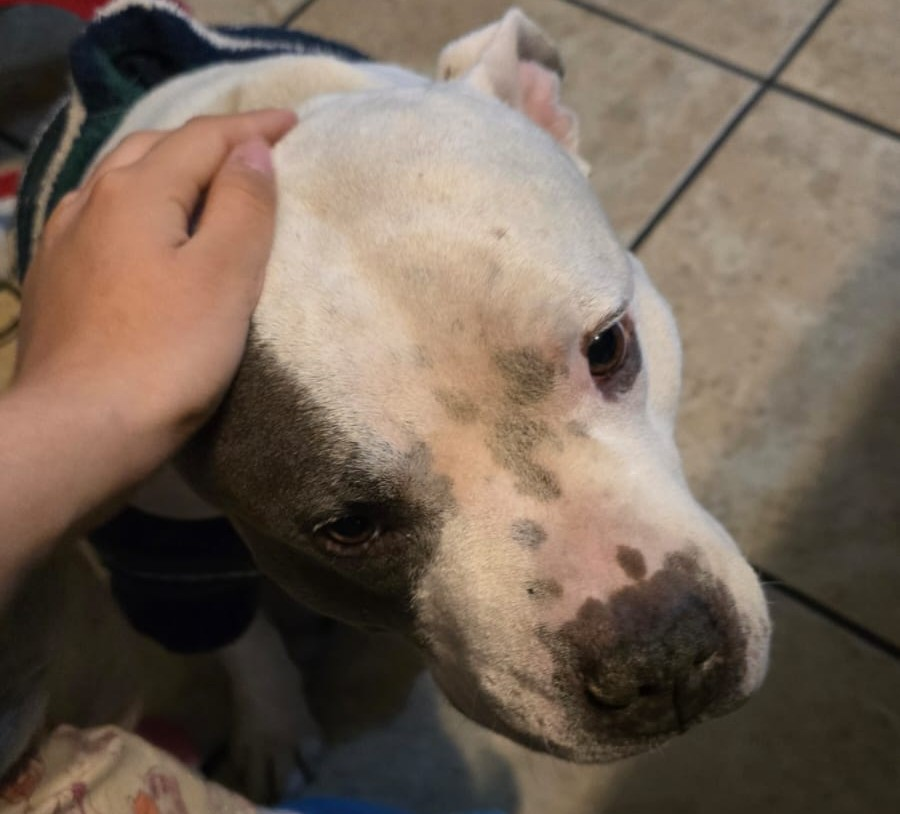

Paciencia Recompensada
Te acercas lentamente, extendiendo tu mano con cuidado.
La criatura huele tus dedos y, después de un momento, permite que la toques.
Sus escamas son tibias y reconfortantes. Emite un sonido de satisfacción.
No es un vínculo perfecto, pero es un buen comienzo.